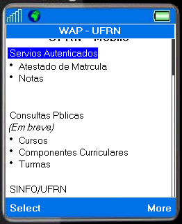
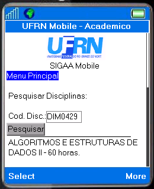
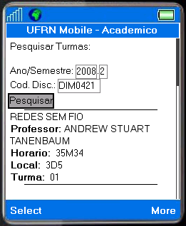
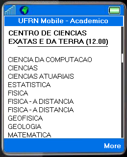
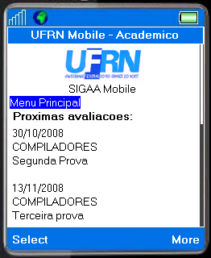
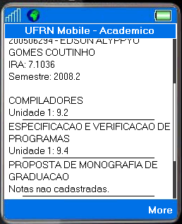
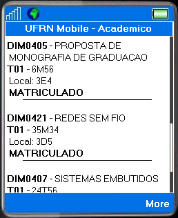

|  |
Além do acesso pela Web, o SIGAA também poderá ser acessado remotamente a qualquer hora e em qualquer lugar através de dispositivos móveis: celular, pda, smartphone etc. Dessa forma, mais praticidade e comodidade são fornecidas ao usuário do sistema. O SIGAA mobile fornece seus serviços em dois modos: público e privado. O modo público possibilita a pesquisa de disciplinas, turmas e cursos da UFRN a qualquer usuário da plataforma mobile, enquanto o modo privado pode ser acessado apenas por usuários da instituição e autenticados. A senha de acesso consiste em seis dígitos, cadastrados através do SIGAA > Portal do Discente > Menu Outros > opção Criar senha de acesso por celular. |
| Tela principal do SIGAA mobile |
Os serviços oferecidos pelos dois modos, são visualizados a seguir.
| Modo | Serviço | Descrição |
| Público | Pesquisa de disciplina | O sistema exibe informações da disciplina: nome, CH, ementa, pré-requisitos, co-requisitos e equivalências da disciplina pesquisa. |
| Pesquisa de turma | Sistema retorna todas as turmas abertas para a disciplina no período solicitado. | |
| Pesquisa de cursos | Sistema exibe a lista de cursos por centro. | |
| Privado | Datas das provas | Sistema exibe datas das provas do usuário logado. |
| Consulta de notas | Sistema exibe notas do usuário logado. | |
| Atestado de matrícula | Sistema exibe atestado de matrícula do usuário logado. |
As telas das operações descritas acima estão mostradas nas figuras abaixo.
|  |  |  |
| (a) | (b) | (c) |
|  |  |  |
| (d) | (e) | (f) |
(a) Pesquisa de disciplina; (b) Pesquisa de turma; (c) Pesquisa de cursos; (d) Datas de prova; (e) Consulta de notas e (f) Atestado de matrícula.